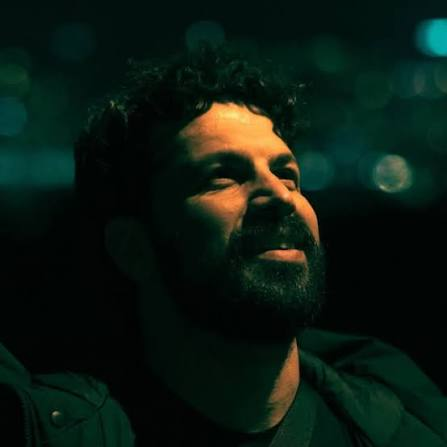

بنیانگذار خانه ماورا
منصور نصیری
بازیگر، کارگردان و نویسنده
منصور نصیری، بازیگر و کارگردان سینما و تئاتر، خانه ماورا را برای پیوند هنر و آگاهی پایه گذاشته است؛ جایی که هنر دستمایهی نگاهی دوباره به خویشتن میشود. او با بیش از دو دهه تجربه در تئاتر، سینما و تلویزیون، مسیرش را از صحنه آغاز کرد و در آثارش، بازیگری را راهی برای شناخت عمیقتر انسان میداند. پادکست «ما ورای بازیگری»، کارگاهها و جلسات همراهی، ادامهی همین راهاند.
زنده
همین حالا در خانه ماورا
در راه
رویدادهای پیشرو
گالری